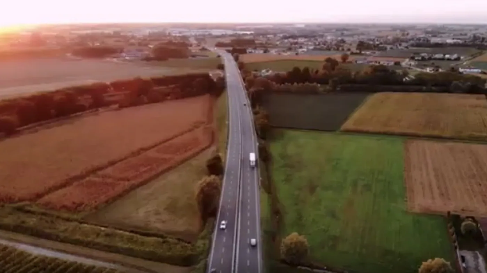

YPF presentó durante Expo Transporte 2026 una nueva etapa de YPF Ruta, su plataforma destinada a la administración de flotas. La novedad no consiste solamente en mostrar vehículos sobre un mapa: combina información de combustible, recorridos, tiempos, conducción y productividad con herramientas de análisis e inteligencia artificial.
El objetivo declarado es pasar de revisar lo ocurrido a detectar con anticipación desvíos que pueden convertirse en costos o riesgos. Para una flota, esa diferencia es importante. Un exceso de ralentí, una carga fuera de la zona prevista o una unidad subutilizada parecen hechos aislados; al observarlos de forma sistemática pueden revelar una oportunidad concreta de mejora.
Qué información reúne
La propuesta centraliza la ubicación y los viajes de cada unidad, las detenciones, la distancia recorrida, el tiempo de motor en ralentí y el consumo estimado. También puede mostrar perfiles de conducción, cumplimiento de geocercas y eventos como excesos de velocidad o paradas no autorizadas.
La integración con la compra de combustible permite validar cargas, configurar límites por vehículo y conservar la trazabilidad. Según la presentación difundida por medios especializados, la georreferenciación puede utilizarse para comprobar que la unidad se encuentre donde corresponde cuando se realiza la operación.
Esto ayuda a reunir en una misma lectura lo que muchas empresas todavía controlan en planillas y sistemas separados. La calidad del resultado, sin embargo, depende de que cada vehículo, conductor y tarjeta estén correctamente identificados.
Qué aporta la inteligencia artificial
YPF Ruta incorpora un asistente conversacional que analiza la información disponible de la flota. En lugar de recorrer múltiples reportes, el responsable puede plantear una consulta y buscar unidades con consumos atípicos, detenciones prolongadas o bajo nivel de utilización.
La inteligencia artificial no reemplaza el criterio del encargado de tráfico o mantenimiento. Un consumo elevado puede deberse a una falla, pero también a una ruta con pendientes, una carga mayor, viento, tránsito o un trabajo estacionario. Su utilidad está en reducir el tiempo necesario para encontrar el dato que merece investigación.
Para que una alerta sea valiosa necesita contexto. Conviene comparar vehículos equivalentes, medir períodos suficientemente largos y registrar cambios de conductor, carga y recorrido. Una decisión basada en un dato incompleto puede ser tan costosa como no medir.

Del tablero al taller
Una plataforma de flota puede convertirse en una fuente de mantenimiento preventivo. El aumento sostenido del consumo, una variación en el tiempo de ralentí o una pérdida de velocidad media no diagnostican por sí mismos una pieza, pero justifican una revisión antes de que la unidad se detenga.
El taller puede cruzar esas señales con presión de neumáticos, estado de filtros, sistema de inyección, fugas, alineación, frenos y refrigeración. También resulta útil comparar el dato antes y después de una reparación para comprobar si el trabajo produjo la mejora esperada.
Cuando existe información del bus CAN, el análisis puede incorporar horas de motor y variables del vehículo. Eso permite programar servicios según el uso real y no solamente por kilometraje, algo especialmente relevante para unidades que trabajan detenidas con toma de fuerza.
Seguridad y hábitos de conducción
El seguimiento de aceleraciones, frenadas, velocidad y cumplimiento de recorridos permite construir indicadores de conducción. Bien utilizado, ese registro sirve para capacitar y reconocer mejoras. Mal utilizado, puede transformarse en una clasificación injusta si no considera el tipo de trabajo o las condiciones de cada ruta.
La mejor práctica es revisar eventos concretos con el conductor y vincularlos con un plan de formación. Una frenada brusca aislada puede evitar un accidente; una repetición frecuente en el mismo recorrido quizá indique exceso de velocidad, mala planificación o un punto peligroso que la empresa debe atender.
Cómo implementar la herramienta sin sumar ruido
- Definir tres objetivos: por ejemplo, reducir ralentí, controlar cargas y mejorar disponibilidad.
- Ordenar los datos: asociar correctamente unidad, conductor, tarjeta, base y tipo de operación.
- Establecer una referencia: medir varias semanas antes de fijar metas o comparar vehículos.
- Asignar responsables: cada alerta debe tener una persona y un plazo de revisión.
- Integrar al taller: convertir desvíos repetidos en órdenes de inspección trazables.
- Revisar resultados: medir ahorro, seguridad y disponibilidad, no solamente cantidad de alertas.
Qué conviene preguntar antes de contratar
La empresa debe confirmar qué dispositivo necesita cada unidad, qué datos entrega el vehículo, con qué frecuencia se actualizan, cuánto tiempo se conservan y cómo se administran los permisos. También conviene consultar costos de instalación, conectividad, soporte, exportación de reportes y posibilidad de integrar otros sistemas.
La privacidad y la seguridad informática forman parte de la evaluación. Los datos de ubicación, consumo y conducción son sensibles. Debe quedar claro quién puede verlos, cómo se protegen y qué sucede cuando una unidad o un conductor deja de formar parte de la flota.
Una herramienta, no una solución automática
La evolución de YPF Ruta muestra que la digitalización del transporte argentino está entrando en una etapa más práctica. Ya no se trata de instalar un GPS para saber dónde está el camión, sino de relacionar información para mejorar decisiones de combustible, mantenimiento y seguridad.
El resultado dependerá de la disciplina operativa. La inteligencia artificial puede señalar una anomalía con rapidez; el ahorro aparece cuando la organización comprueba la causa, corrige el problema y evita que vuelva a repetirse.